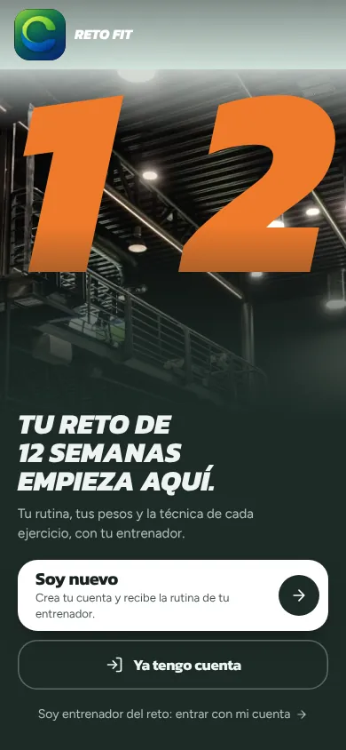
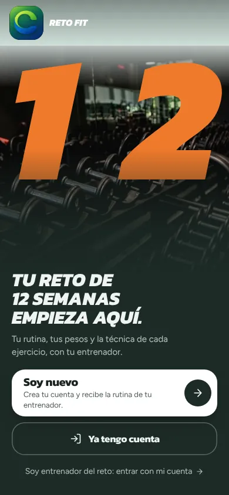
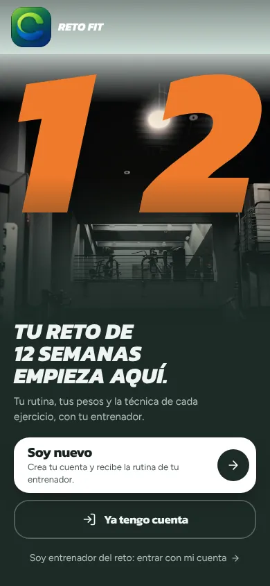
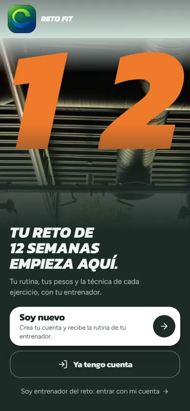
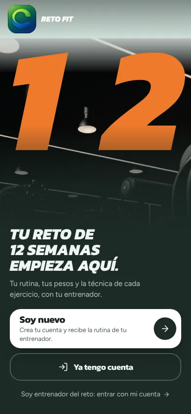
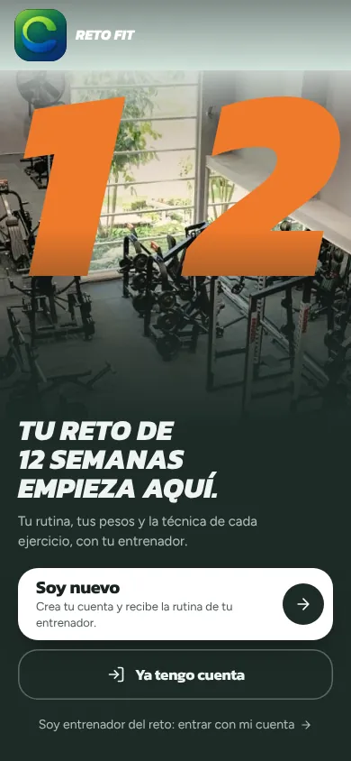
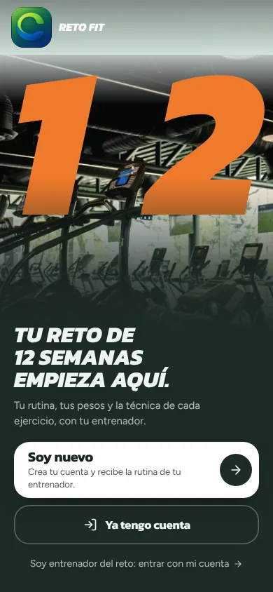

6 · Recomendada. Salón con mezzanine y focos: se reconoce el club y el 12 resalta.

2 · Muy buena. Mancuernas: oscura y pareja, el 12 y el texto se leen perfecto.

1 · Buena. Pasillo en blanco y negro con el foco entre el 1 y el 2; muy elegante.

7. Ductos y focos; se ve industrial pero se pierde el ventanal.

4. Bien leída, pero muy negra: no se nota que es un gimnasio.

5. Vista desde arriba: el piso claro le quita fuerza al 12.

3. Cardio: mucho detalle detrás del 12 y salen las marcas.